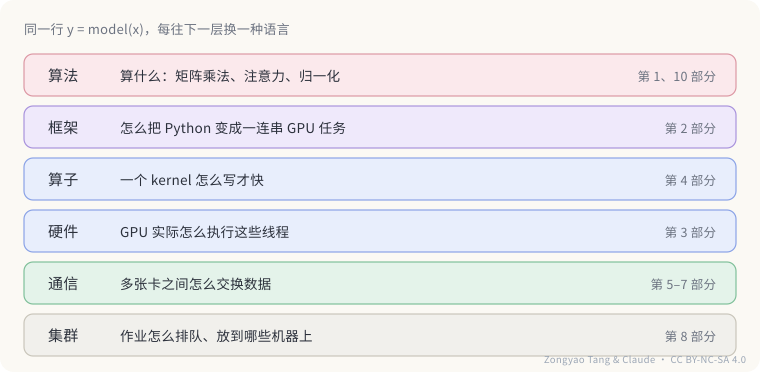
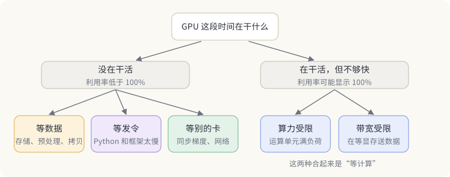

这一单元先不讲任何细节，只建立一张图。线索是：训练的一步是一条串联的管道 → 同一条管道可以分六层来看，这门课就是按这六层排的 → 管道上的“慢”只有四种 → 有五个思想会在各层反复出现。带着这张图读后面的内容，每学一样东西都知道它在哪里、和谁相连。
第 0 部分 · 全景与度量0.1 一次训练 step 的旅程
这一单元回答训练一步，从硬盘上的数据到更新后的参数，中间到底经过了什么？
整门课的地图。后面每个部分讲的都是这张图上的某一段、某一层。
讲解
1训练的一步是一条串联的管道，最慢的一段决定速度
一步训练要依次经过：从存储读数据 → CPU 解码和预处理 → 组成 batch 放进锁页内存 → 拷到 GPU → 前向和反向计算 → 多卡之间同步梯度 → 优化器更新参数。这些环节首尾相接，任何一段慢了，后面的都得等。

一步训练的六个环节，以及四种“等”各自出现在哪一段（四种等在第 3 条细讲） 把
loss.backward()前后发生的事按时间排开，一步训练是这样走的：- 存储 → CPU：从磁盘或网络存储读出原始数据，解码（图片解压、文本分词）、做数据增强。这一段用的是 CPU。
- CPU → 锁页内存：把若干样本拼成一个 batch，放进一块“钉住”的内存（为什么要钉住，见 0.3）。
- 内存 → GPU：通过 PCIe 把 batch 拷进显存。
- 前向和反向：GPU 执行成百上千个 kernel，算出损失和梯度。
- 梯度同步：多卡训练时，各张卡的梯度要通过 NVLink 或网络汇总（all-reduce）。
- 优化器：用梯度更新参数。
关键在“串联”两个字。假设第 4 步 GPU 每秒能处理 1000 个样本，但第 1 步 CPU 每秒只能准备好 300 个，那么整体就是每秒 300 个，GPU 有七成时间在空等。这时给 GPU 换更快的型号、把 kernel 优化得再好，都没有任何效果。
实际情况会更好一点，因为相邻的环节可以重叠：GPU 在算这一个 batch 时，CPU 已经在准备下一个；反向传播还在进行时，已经算好的那部分梯度可以先发出去同步。重叠能把各段的时间“叠”起来而不是“加”起来，但改变不了一个事实：长期来看，流量由最窄的那一段决定。
这门课后面的每个部分，都是在把其中某一段讲透：第 2 部分讲 1–3 步和框架怎么驱动第 4 步，第 3、4 部分讲第 4 步内部，第 5、6、7 部分讲第 5 步。
排查：从现象判断瓶颈在管道的哪一段
拿到一个“训练慢”或“GPU 利用率低”的问题，按这个顺序问，每一步都把范围缩小一半：
先看 GPU 是不是一直在忙。 看一段时间线（profiler 的 trace，或者每秒采样的利用率）：
- GPU 时忙时闲、有规律的空白：GPU 在等别人。接着看空白的时候谁在忙。
- GPU 一直在忙，但吞吐低：问题在计算本身，跳到最后一条。
GPU 空着的时候，CPU 在干什么？
- 数据加载的进程把 CPU 占满了：瓶颈在第 1–2 步（数据供给）。验证办法是把同一个 batch 反复喂给模型、完全不读数据，如果吞吐大幅上升，就确认了。
- 主进程的一个核占满、在执行 Python：瓶颈是“发令”太慢（开销），常见于模型小、算子多的情况。
- CPU 也不忙：可能在等存储或网络 IO，或者在等别的卡。
多卡时，单卡跑是不是正常？ 同样的配置只用一张卡，如果每张卡的吞吐明显更高，说明损失出在第 5 步（通信），或者某一张卡、某一条链路拖慢了大家。
GPU 一直在忙但还是慢。 这时才值得深入 kernel：找出最耗时的两三个 kernel，判断它们是算力受限还是带宽受限（第 3 部分的 Roofline）。
这个顺序的道理是：越靠前的检查越便宜，而且前面几步的问题最常见。很多“GPU 性能问题”其实是数据加载问题。
打个比方像一条装配流水线：七个工位里只要有一个每分钟只能过 10 件，整条线每分钟就只能出 10 件，其余工位再快也只是多等。
所以优化的第一步永远是找出最慢的那一段。在不是瓶颈的环节上花力气，整体速度一点都不会变。
- 管道是按时间看的。同一件事还可以按“层”来看：一行 loss.backward()，在不同的层里是完全不同的东西。
2同一条管道分六层来看，每往下一层换一种语言
从你写的一行 Python 到硬件上的电信号，中间隔着六层：算法（模型和训练方法）、框架（PyTorch 怎么执行）、算子（一个个 kernel）、硬件（GPU 内部怎么跑）、通信（多卡之间怎么交换数据）、集群（很多机器怎么组织）。每一层都用自己的概念描述同一件事。

六层和它们在这门课里的位置 用
y = model(x)这一行举例，看它在每一层是什么：- 算法层：一个 Transformer 的前向计算，数学上是一串矩阵乘法、注意力和归一化。关心的是“算什么”。（第 1、10 部分）
- 框架层：PyTorch 逐个执行算子，每个算子经过 dispatcher 找到对应的实现，同时为反向传播记下计算图。关心的是“怎么把 Python 变成一连串 GPU 任务”。（第 2 部分）
- 算子层：每个算子是一个或几个 CUDA kernel，比如一次矩阵乘法、一次 softmax。关心的是“这个 kernel 怎么写才快”。（第 4 部分）
- 硬件层：kernel 被拆成几十万个线程，以 32 个一组在 GPU 的计算单元上执行，数据在显存、缓存、寄存器之间流动。关心的是“硬件实际怎么跑”。（第 3 部分）
- 通信层：多卡时，梯度通过 NVLink、InfiniBand 在卡之间传递，由 NCCL 安排谁发给谁。关心的是“数据怎么在卡之间流动”。（第 5、6、7 部分）
- 集群层：成百上千张卡由调度系统分配，作业会排队、会失败、要存检查点。关心的是“这些机器怎么组织起来”。（第 8 部分）
层与层之间是“翻译”关系：上一层的一个动作，在下一层变成很多个动作。一行 Python 变成上千个算子调用，一个算子变成几十万个线程，一次梯度同步变成几万个网络包。
这也解释了为什么性能问题难查：现象出现在上层（训练慢），原因常常在下面好几层（比如某条网络链路在丢包）。这门课的顺序大体是从上往下，再从单机到多机，目的就是让你能沿着这条翻译链，一层一层追下去。
打个比方像寄一个包裹：你只说“寄到上海”（算法）；快递公司把它变成分拣和路由的指令（框架）；每个环节是一次具体的装卸（算子）；卡车和传送带真正在动（硬件）；城市之间靠干线运输（通信）；整个网络还要有人调度（集群）。
所以遇到一个现象，先问它属于哪一层。同一个“慢”，在算法层可能是 batch 太小，在框架层可能是图被打断，在硬件层可能是访存没有合并。层找对了，问题就解决了一半；这也是你读源码时定位“该看哪个仓库、哪个目录”的依据。
- 六层讲的是“在哪里”。还需要一个分类回答“为什么慢”。不管在哪一层，慢的原因归结起来只有四种。
3管道上的“慢”只有四种：等数据、等计算、等发令、等别的卡
GPU 没有全速产出，原因只能是四类之一：数据还没送到（等数据）；GPU 在算，但被算力或显存带宽卡住（等计算）；GPU 闲着，因为 CPU 发任务太慢（等发令）；自己算完了，在等其他卡或网络（等别的卡）。

先分“在不在干活”，再各分两种 把 GPU 的时间分成“在干活”和“没在干活”，再各分两种，就得到四类：
GPU 没在干活
- 等数据：下一个 batch 还没准备好。原因在存储、CPU 预处理或拷贝。典型表现是 GPU 利用率呈锯齿状。（第 2 部分的数据供给）
- 等发令：数据在，但 CPU 上的 Python 和框架来不及把下一个 kernel 发过去。模型由大量很小的算子组成时最明显。（第 2 部分的 eager 开销和 torch.compile）
- 等别的卡：多卡训练时每一步都要同步梯度，快的卡要等慢的卡，所有卡都要等网络。（第 5–7 部分）
GPU 在干活，但不够快
- 等计算：又分两种。运算单元真的满负荷，是算力受限；运算单元在等数据从显存送来，是带宽受限。后者更常见，也更隐蔽，因为这时 GPU 利用率显示的是 100%。（第 3、4 部分）
后面你会在 3.1 读到“三面墙”（算力、带宽、开销），那是只看单卡计算这一段时的分类。这里的四种“等”把它扩展到了整条管道：加上了管道前端的数据，和多卡之间的通信。
这个分类最大的用处是防止用错药。几个常见的错配：
- 数据供不上，却去优化模型的 kernel。
- 小模型被发令速度卡住，却去换更贵的显卡。
- 带宽受限的算子，却指望更高的算力让它变快。
- 通信是瓶颈，却继续加卡。
打个比方像一家餐厅出菜慢：食材没送到；灶台火力不够；服务员下单太慢，厨师闲着；或者一桌菜要等最慢的那道做好才能一起上。
所以每个优化手段都只对其中一类有效。先判断是哪一类，再选手段；用错了类别，花多少力气都没有效果。
- 四种“等”说的是问题。解决问题的办法看起来五花八门，但背后的思路其实很少。
4五个思想会在每一层反复出现
后面几十个单元里的技巧，归结起来是五个思想的不同化身：瓶颈决定一切；用别的活把等待填满；把数据搬到近处并多用几次；成批处理来摊薄固定成本；用多算一点或多传一点来换存储。
一、瓶颈决定一切。 整体速度由最慢的环节决定，优化别处没有用（Amdahl 定律）。它出现在：训练管道的各段之间；一个 kernel 的算力与带宽之间（Roofline）；多卡之间（最慢的卡和最慢的链路）。
二、用别的活把等待填满。 等待免不了，但等的时候可以干别的。它出现在：GPU 在一组线程等数据时切去执行另一组；CPU 在 GPU 计算时准备下一个 batch；DDP 在反向传播还没结束时就开始同步已经算好的梯度；矩阵乘法一边算这一块一边加载下一块。
三、把数据搬到近处，多用几次。 越近的存储越快，所以把要反复用的数据挪到近处。它出现在：CPU 的缓存；GPU 上把一块数据搬进共享内存反复使用（分块）；Flash Attention 让中间结果留在芯片上不写回显存；推理时把算过的结果缓存起来（KV cache）。
四、成批处理，摊薄固定成本。 每做一件事都有固定的手续费，一次多做几件，手续费就分摊了。它出现在：把样本组成 batch；把几百个小 kernel 融合成一个；把小的梯度攒成一桶再发；推理时把多个请求合在一起算。
五、用计算或通信换存储。 放不下的时候，可以不存，用到时再算一遍，或者从别处取。它出现在：Flash Attention 反向时重算注意力；activation checkpointing；FSDP 让每张卡只存一部分参数，用到时再从其他卡取。
后面每个单元的讲解里，遇到这五个思想之一出现的地方，都会用「承接」把它连回这里或者连到它上一次出现的地方。学完之后，你记住的应该不是几十个孤立的技巧，而是这五个思想在六层上的展开。
打个比方像学一门语言：单词成千上万，语法规则只有那么几条。认出了规则，新单词一看就懂。
所以学到新东西时，先问“这是哪个思想换了一身衣服”。能对上号，它就自动和你已经懂的东西连起来了。
串起来
一步训练是数据从存储流到 GPU、算出梯度、多卡同步、更新参数的一条管道，最慢的一段决定整体速度。这条管道从上到下分六层：算法、框架、算子、硬件、通信、集群。慢只有四种：等数据、等计算、等发令、等别的卡。解决它们的办法归结为五个反复出现的思想。
考考自己
不看讲解，用自己的话讲一遍。
- 一步训练依次经过哪些环节？为什么说“最慢的一段决定速度”？
- 这门课把训练系统分成哪六层？各自关心什么问题？
- GPU 没有全速产出时，可能在“等”哪四样东西？各举一个例子。
- 课程里反复出现的五个思想是什么？各举一个它在不同层出现的例子。
术语
- pipeline
- 管道
- bottleneck
- 瓶颈
- overhead
- 开销
- throughput
- 吞吐